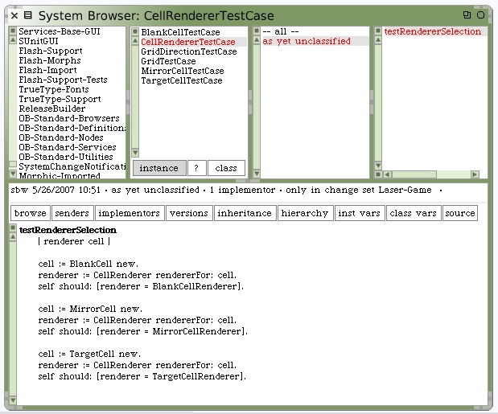
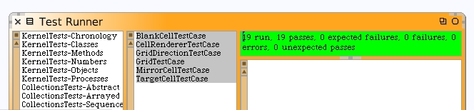
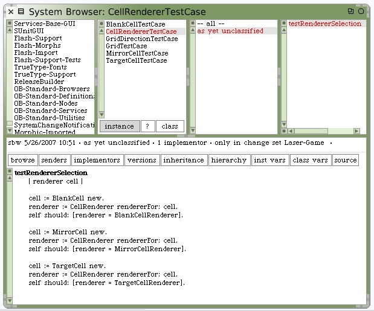
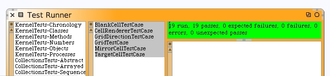

We can write some unit tests to validate cell render class selection works as we expect.
Run our unit tests and check results. Make sure the new test case is included in the tests you are running.
Section 2
We can write some unit tests to validate cell render class selection works as we expect.
Run our unit tests and check results. Make sure the new test case is included in the tests you are running.
